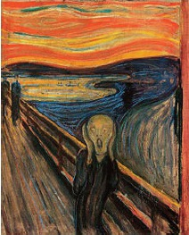

Norveçli dışavurumcu Edvard Munch (1863-1944) imzalı Çığlık (1893), varoluşsal kaygının modern ikonu oldu.
Munch, Çığlık resmini Yaşam Frizleri (“yaşamın, aşkın ve ölümün şiiri) başlıklı daha büyük bir seri projesi için yaptı. Eser, sineztezinin (ışık ve renk vuruşlarının sesin izlenimini üreteceği veya tersinin olacağı fikri) çağdaş kuramlarını göstermek niyetindeydi. Munch’un resminin ilk versiyonu, aslında ürkütücü görüntüsüne esin vermiş olan bir tecrübenin unutulmaz bir anısını barındırıyordu: “İki arkadaşla dışarıda yürüyordum – güneş âniden batmaya başladı – gökyüzü kan kırmızısına döndü – aşırı derecede yorgun hissederek durdum ve çitlere yaslandım – mavi-siyah fiyordun ve şehrin yukarısında ateşin dilleri ve kanı vardı – arkadaşlarım yürümeye devam ettiler ve ben kaygıyla titreyerek orada donakaldım – ve doğadan geçip gelen sonsuz bir çığlığı sezdim.”

Bu nedenle merkez figür, Munch’un kendisidir. Resimdeki adam çığlık atmıyor ama kulaklarını gürültüden koruyor. Onun arkasında, Ekeberg tepesinden görüldüğü gibi Oslo fiyortları vardır. Çarpıtılmış perspektif ve donuk, dönüp duran hatlar, çığlığın kaçınılmaz sesine görsel bir şekil kazandırır.
Munch resmin elliden fazla versiyonunu yapmasına rağmen, ikisi kısmen daha kayda değerdir. Karton üzerine guaj boyayla yapılan ilki, 2004 yılında Oslo’da Munch Müzesi’nden çalındı. Yağlıboya, suluboya ve pastel ile yapılan ikincisi, Oslo’da Ulusal Müze’dedir. Munch, 1895’te resmin bir taşbaskısını da yaptı.
EK BİLGİ:
1. 2003 yılında yürütülen bir meteoroloji çalışması, Munch’un ilham kaynağının 1883’te Krakatoa’nın patlamasıyla oluşan, alışılmışın dışında yoğun bir günbatımı olduğunu ileri sürdü.